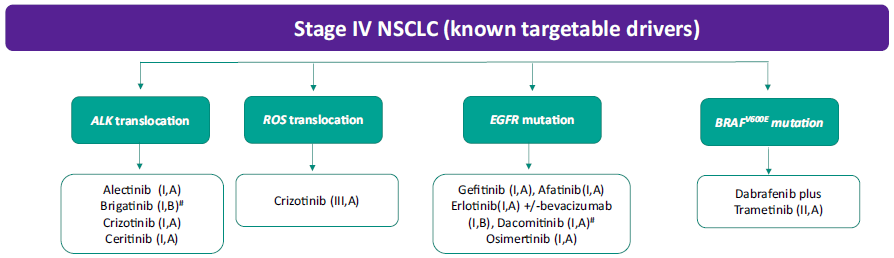

MÓDULO 4 : Tratamiento de la enfermedad avanzada en primera línea

Pacientes con ECOG ≥ 2
La QT ha demostrado aumentar la SG y la calidad de vida en pacientes con CNMP avanzado con ECOG 2, en comparación con el tratamiento de soporte.
Un metaanálisis reciente de varios ensayos randomizados comparó la eficacia y seguridad de los dobletes de QT con platino frente a regímenes en monoterapia como tratamiento de primera línea en pacientes con CNMP avanzado con ECOG 2. Se demostró un aumento en TR y supervivencia con los regímenes con platino frente a la monoterapia, si bien a expensas de una mayor toxicidad, principalmente hematológica.
Dos estudios fase III demostraron un aumento en supervivencia con combinaciones de carboplatino frente a monoterapia en pacientes con PS2.
Por tanto, en pacientes con ECOG 2 y adecuada función orgánica, la QT con un doblete de platino, preferiblemente carboplatino, constituye el tratamiento estándar.
El tratamiento en monoterapia con gemcitabina, vinorelbina, docetaxel y pemetrexed también ha demostrado eficacia en pacientes con ECOG 2, siendo una opción de tratamiento válida.
En cuanto al tratamiento de inmunoterapia, hasta la fecha los distintos estudios fase III en primera línea han excluído a pacientes con ECOG2. El estudio CheckMate 153 incluyó 108 pacientes con ECOG2 tratados con nivolumab en segunda línea, objetivando para este subgrupo de pacientes una menor eficacia en comparación con los pacientes con ECOG 0-1. La toxicidad fue comparable para ambos grupos de pacientes. Por lo tanto, por el momento la evidencia para el uso de inhibidores checkpoint en pacientes con ECOG 2 es limitada, si bien no contraindicada.
En pacientes con ECOG 3-4 sin alteraciones moleculares subsidiarias de tratamiento, no se recomienda el tratamiento de QT ya que no ha demostrado ningún beneficio.
Importante: En pacientes con CNMP avanzado con ECOG 2 y adecuada función orgánica, la QT con un doblete de platino, preferiblemente con carboplatino, constituye el tratamiento estándar de primera línea.
El tratamiento en monoterapia con gemcitabina, vinorelbina, docetaxel y pemetrexed también ha demostrado eficacia en pacientes con ECOG 2, siendo una opción de tratamiento válida.
Por el momento la evidencia para el uso de inhibidores checkpoint en pacientes con ECOG 2 es limitada, si bien no contraindicada.
Pacientes ancianos
La edad no debe de considerarse un factor decisivo en la elección del tratamiento del CNMP avanzado y en estos pacientes se recomienda una escala de valoración geriátrica que ayude a determinar el estatus biológico.
En los años 2000, diversos estudios fase III demostraron en pacientes mayores de 70 años con CNMP avanzado un beneficio con QT en monoterapia frente a cuidados de soporte.
Posteriormente un metaanálisis demostró un beneficio con los dobletes de platino en pacientes mayores de 70 años con buen estado general.
Un metaanálisis realizado con 13 ensayos randomizados con 1705 pacientes mayores de 70 años, demostró que la incorporación de un platino suponía un aumento en la TR (RR 1, 57; IC 95% 1.32-1.85), la SLP (HR0.76;IC 95% 0.61-0.93) y la SG (HR0.76;IC 95% 0.59-0.78) en comparación con los regímenes de QT sin platino. Carboplatino se asoció con una mayor SG (HR0.67;IC 95% 0.69-0.85) mientras que cisplatino no (HR0.91;IC 95% 0.77-1.08).Hubo una mayor toxicidad principalmente anemia, trombocitopenia, emesis, diarrea y neuropatía periférica. Sin embargo en aquellos ensayos en los que se evaluó la calidad de vida, no hubo diferencias en calidad de vida entre los esquemas con y sin platino.
En base a estos datos, la QT con un doblete de carboplatino constituye el tratamiento estándar para los pacientes mayores de 70 años con ECOG 0-2 y adecuada función orgánica. Para aquellos pacientes no elegibles para un doblete de platino, la QT con agente único sigue siendo el tratamiento estándar.
En cuanto al tratamiento de inmunoterapia, todavía no disponemos de resultados de los ensayos llevados a cabo en población anciana pero basándonos en los análisis de subgrupos de distintos estudios, no parece haber diferencias en supervivencia entre los pacientes mayores de 65 años y los pacientes menores de 65 años. Tampoco parecen existir diferencias en toxicidad.
En el estudio KEYNOTE-024 que compara en pacientes con PDL1 > 50% la adición de pembrolizumab al tratamiento de QT con carboplatino y pemetexed, la mayoría de los pacientes randomizados eran mayores de 65 años. En el análisis de subgrupos se objetivó beneficio en supervivencia con pembrolizumab tanto en los pacientes mayores de 65 años como en los menores de 65 años (HR 0.45 vs 0.61).
En el estudio CheckMate 026, que compara la adición de nivolumab al tratamiento de QT, no hubo diferencias en supervivencia con nivolumab entre los pacientes mayores y menores de 65 años.
Por lo tanto en base a estos datos, el tratamiento de inmunoterapia ha de regirse en mayores de 65 años por las mismas recomendaciones que en menores de 65 años.
Importante: La QT con un doblete de carboplatino constituye el tratamiento estándar para los pacientes mayores de 70 años con ECOG 0-2 y adecuada función orgánica. Para aquellos pacientes no elegibles para un doblete de platino, la QT con agente único sigue siendo el tratamiento estándar. El tratamiento de inmunoterapia ha demostrado similar eficacia y tolerancia en la población mayor de 65 años.
Tratamiento de soporte
Los cuidados paliativos dirigidos de forma temprana mejoran la calidad de vida de los pacientes con CNMP avanzado. Dos estudios randomizados han evaluado el impacto en calidad de vida de la introducción temprana de cuidados paliativos específicos tras el diagnóstico de enfermedad avanzada, demostrando una mejoría en calidad de vida y en uno de ellos, también una mejoría en supervivencia global.
Algoritmos de tratamiento
A continuación se muestra el algoritmo de tratamiento de ESMO 2018:
